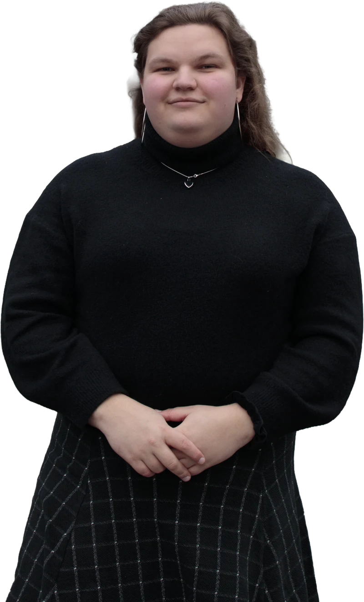

Junior Support Consultant · Humaris · Sep 2026 – present
I help advisors, customers of ParaDIGMA groep and their employees use ParaDIGMA's online absenteeism platform, working in TopDesk, Excel and the platform itself.
Product Engineer & Founder

I'm a product engineer with roots in customer support. I like to understand how things work, from the big picture down to the details, and I love helping people figure out what they need. Through mia.cx I design, build and run my own products. In support, I learned to find the problem behind the question.
I care about making things easier to understand and better to use. Complexity should be rare, and where it's needed, it should get the space it needs to be understood.
I've worked on both sides of a product: building it, and supporting the people who use it. Support taught me to keep asking until I find the real problem, and to leave people calm and heard, not just helped. Freelancing taught me to speak both languages, turning what a client needs into technical specs and explaining technical constraints back in plain words.
I've also handled the people side of projects. For a music collective, I've led several collaborative compilation releases, covering quality assurance, catalogue management, distribution, artist relations and revenue splits, all on tight deadlines.
I'm almost entirely self-taught. I studied Music & Technology at HKU and found that formal education doesn't suit me. I learn best through a project I want to build. Because of my ADHD, once I have one, nothing can stop me.
I help advisors, customers of ParaDIGMA groep and their employees use ParaDIGMA's online absenteeism platform, working in TopDesk, Excel and the platform itself.
mia.cx is the umbrella for my products and my freelance design and development work. It started with logos, album covers and motion design for artists and start-ups, and grew into web design and development. In 2023 I launched the hypertrance.eu webshop for nuphory on Shopify and Cloudflare.
I helped clients with their banking every day: about half needed guidance in the mobile app, and the rest ranged from financial questions to complex disputes. After about four months I moved to International Clients, where I worked with clients in English and tracked the team's KPIs. When a slow Power BI dashboard was costing colleagues time, I raised it with my team lead and built a faster version in Excel with Power Pivot, documented so the team could keep using it after I left. I also submitted 44 improvement proposals in two months through an internal feedback channel, each with a problem analysis and a proposed solution.
I booked COVID test appointments by phone during a period of high call volumes, often for stressed or worried callers, and handled their personal data with care.
I stocked shelves, received freight from the distribution centres before opening hours, and later worked in the bakery, helping customers on the shop floor along the way. I also earned a company emergency response (BHV) certificate.